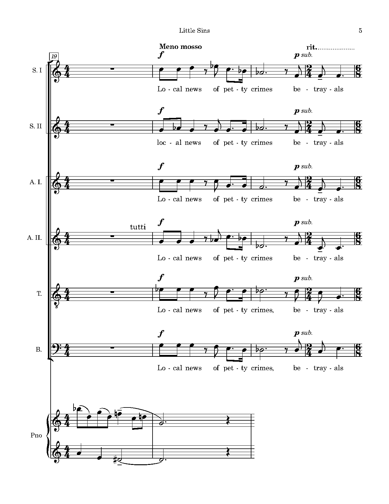
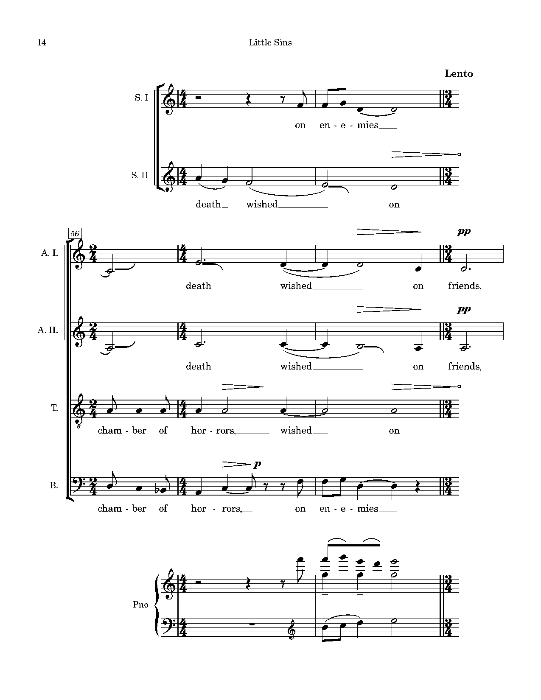
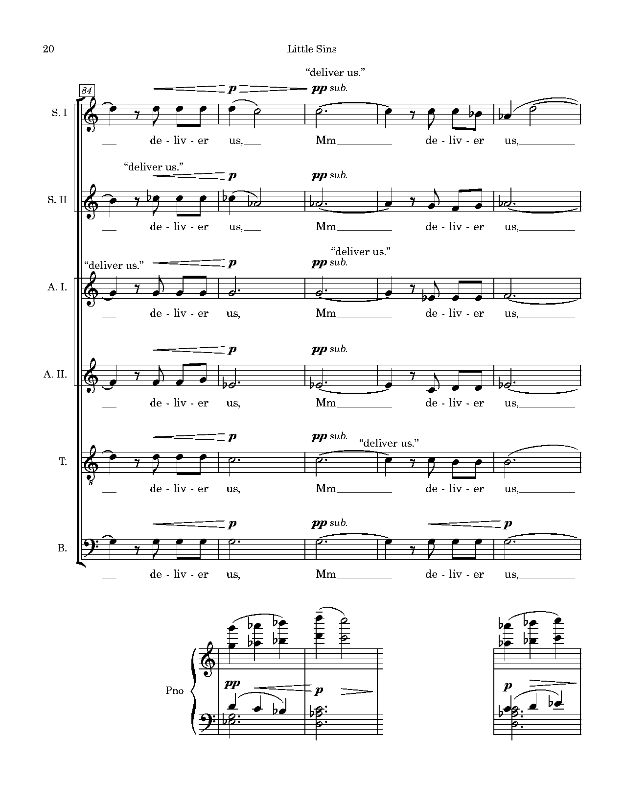

Little Sins portrays the inhumane treatment of people by the United States government and the fascist organization commonly known as ICE. The work sets Rebecca Morgan Frank’s poem “Peccadillos,” a catalogue of the small transgressions and discomforts of the time her grandfather spent in civilian internment camps in the Philippines during World War II. The poem’s title gives the work its name, and its lines move the way gossip does, from the trivial to the confessional, until a plea for deliverance takes over. Looking at how the poem is laid out on the page, I imagined the empty space that recurs at the start of each line as a prison cell, and its repetition as the monotony of being forced to live this way, unjustly. A short piano motive returns throughout the piece to represent that cell.
The piece opens with the piano alone, and a solo voice introduces the first lines, “There is nothing but body / and memory here.” The full choir enters with the local news, and the texture grows as each new sin is added to the list. At the confessional, “a chamber of horrors,” the music slows to Lento as the voices pass “death wished” among themselves, the victims collectively weighing what must feel like their only available relief. The final stanza turns the language of prayer into a litany: “deliver us from hunger” becomes a repeated, insistent “hunger,” and in the closing bars one singer in each section speaks the words “deliver us” over the sung texture, a plea for freedom.
Little Sins was written in 2026 for Kym Scott and the West Virginia University Choir.
Used by permission of the author.


